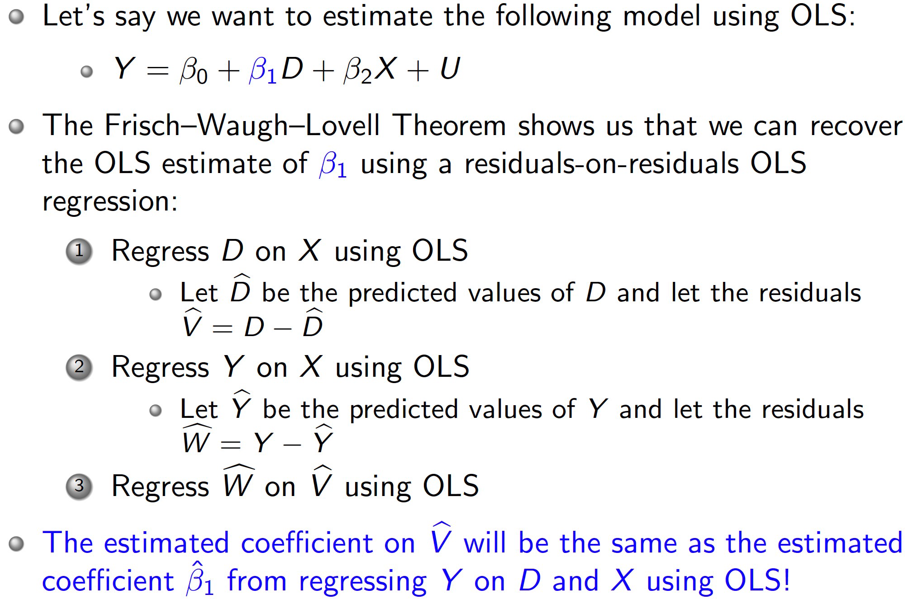
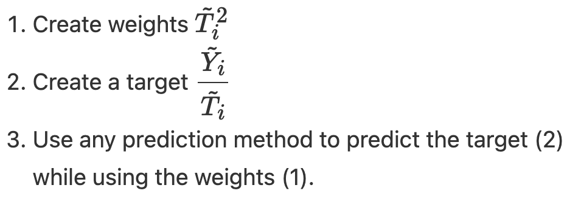

22 - 去偏/正交机器学习 Debiased/Orthogonal Machine Learning
本章节的英文原版地址 https://matheusfacure.github.io/python-causality-handbook/22-Debiased-Orthogonal-Machine-Learning.html.
本章目录
- ML for Nuisance Parameters
- Frisch-Waugh-Lovell
- Frisch-Waugh-Lovell on Steroids
- CATE Estimation with Double-ML
- Non Parametric Double/Debiased ML
- What is Non-Parametric About?
- Non-Scientific Double/Debiased ML
- More Econometrics May be Needed!
- Key Ideas
- References
- Contribute
下一个我们将考虑的元学习器实际上在它们被称为元学习器之前就已经出现了。据我所知，它来自于2016年的一篇论文，这篇论文在因果推断文献中开创了一个富有成果的领域。这篇论文名为《Double Machine Learning for Treatment and Causal Parameters》，由许多人共同撰写：Victor Chernozhukov、Denis Chetverikov、Mert Demirer、Esther Duflo（顺便说一下，她与Abhijit Banerjee和Michael Kremer一起获得了2020年诺贝尔经济学奖，“因为他们通过实验方法缓解全球贫困”）、Christian Hansen、Whitney Newey和James Robins。难怪这是一篇非常好的论文，我甚至将这些作者比作复仇者联盟。

这篇论文只有一个问题：它非常难读（这是可以预料的，因为它是一篇计量经济学论文）。由于这本书的目标是让因果推断变得主流，所以我们在这里尝试让去偏/正交机器学习变得直观。
为什么这篇文章如此特别，以至于值得单独一章？吸引我注意的是去偏/正交机器学习的合理性。我们之前看到的其他方法，如T-learner、S-Learner和X-learner，都有些随意。我们可以直观地解释它们为什么有效，但似乎又不够通用。相较之下，去偏/正交机器学习提供了一个我们可以应用的通用框架，既非常直观又非常严谨。另一个优点是，去偏/正交机器学习既适用于连续干预也适用于离散干预，这是T-learner和X-learner都无法做到的。此外，关于它的论文在渐近分析方面做得非常出色。所以，事不宜迟，让我们开始吧。
ML for Nuisance Parameters 冗余参数的机器学习
我们尝试消除这种偏差的一种方法是使用线性模型来估计价格对销售的处理效应，同时控制混杂因素。
\[ Sales_i = \alpha + \tau price_i + \beta_1 temp_i + \beta_2 cost_i + \pmb{\beta_3} Weekday_i + e_i \]
其中\(\pmb{\beta_3}\)是与每个工作日虚拟变量相关的参数向量。
请注意，我们只对\(\tau\)参数感兴趣，因为这是我们的处理效应。我们称其他参数为冗余参数，因为我们不关心它们。但事实证明，即使我们不关心它们，我们也必须正确估计它们，因为如果我们不这样做，我们的处理效应就会偏离。这就有点烦人了。
比如，我们仔细想想，温度和销售额之间的关系可能不是线性的。首先，随着气温升高，会有更多的人去海边买冰淇淋，因此销售额会增加。但是，到了某一时刻，天气变得太热，人们决定最好待在家里。这时，销售额就会下降。温度和销售额之间的关系可能会在某个地方达到顶峰，然后下降。这意味着上述模型可能是错误的。正确的线性模型可能是，加入一个温度变量的平方形式（adding a quadratic term）
\[ Sales_i = \alpha + \tau price_i + \beta_1 temp_i + \beta_2 temp^2 + \beta_3 cost_i + \pmb{\beta_4} Weekday_i + e_i \]

如果我们有几十个或几百个协变量呢？在现代数据集中，这种情况非常普遍。那么，我们能做些什么呢？答案就是有史以来最酷的计量经济学定理。
Frisch-Waugh-Lovell
Frisch、Waugh和Lovell是20世纪的计量经济学家，他们注意到了线性回归中最酷的事情。这对你来说并不新鲜，因为我们在前面讨论回归残差和固定效应时已经讨论过它。但由于这个定理是理解正交机器学习(Orthogonal-ML)的关键，所以非常值得回顾一下。
现在你想获得\(\pmb{\hat{\beta_1}}\)的值，只需要三步：

这非常酷。这将产生与同时将结果回归到特征和处理完全相同的估计。
Frisch-Waugh-Lovell on Steroids （更厉害版的FWL）
Double/Debiased ML (DML) 可以看作是Frisch、Waugh和Lovell定理的加强版。这个想法非常简单：在构建结果和处理残差时使用ML模型：
\[ Y_i - \hat{M}_y(X_i) = \tau \cdot (T_i - \hat{M}_t(X_i)) + \epsilon \]
其中\(\hat{M}_y(X_i)\)是估计\(E[Y|X]\)的模型，\(\hat{M}_t(X_i)\)是估计\(E[T|X]\)的模型。
怎么强大？因为实操中使用的机器学习的模型可以非常灵活，这意味着 DML可以在估计\(Y\)和\(T\)残差时捕捉交互和非线性，同时仍然保持FWL风格的正交化。这意味着我们不必对协变量\(X\)与结果\(Y\)之间的关系或协变量与处理之间的关系做出任何参数假设，就能获得正确的处理效应。（真心酷～）
使用机器学习方法可以是双刃剑——机器学习功能强大，可以捕捉干扰关系下复杂的函数形式。但这种灵活性也带来了麻烦，因为这意味着我们现在必须考虑过拟合的可能性。Chernozhukov 等人（2016 年）对过拟合如何造成问题进行了更深入、更严谨的解释，我强烈建议您去看看。但在这里，我将继续以直觉为基础进行解释。
要了解这个问题，假设\(M_y\)模型过度拟合。结果是\(Y - M_y(X)\) （Y 这边的残差）会比应有值小。这也意味着机器学习学出来的\(M_y\) 不仅仅捕捉了X和Y的关系，还包括了T 和 Y 之间的关系。这样的话，Y 方面的残差会使得回归结果偏向零。换句话说\(M_y\) 捕捉到了部分因果效应，本来应该把这个工作留给最后的残差回归时做的。
现在我们来看看过拟合 Mt 的问题，注意它对 T的方差的解释会比它应该解释的要多。因此，T 上面的残差的方差会小于其应有的方差。如果T的方差较小，最终estimator的方差就会大。（这就坏了）
就好比如果每个人收到的 treatment 都相同，那么就很难估计不同治疗水平下的情况。顺便提一句，当 T 是关于X 的确定性函数时，也会出现这种情况，这意味着违反了positivity 假设。
如何纠正过拟合呢？答案就在于我们所说的交叉预测和折外残差。用 K 折 cross-fitting 多试几次就好了（本段的代码跳过）
CATE Estimation with DML
到目前为止，我们已经看到Double/Debiased ML如何估计平均处理效应（ATE），但它也可以用于估计处理效应异质性或条件平均处理效应（CATE）。本质上，我们现在讨论因果推断参数\(\tau\) 如何根据单位(unit)的协变量的变化而变化。
我们提出一个新的模型，比起前面的 ATE 估计，\(\tau\) 是关于 X 的一个函数（之前被假设为一个常数）
\[ Y_i - {M}_y(X_i) = \tau(X_i) \cdot (T_i - {M}_t(X_i)) + \epsilon_i \]
现在我们将 \(\tilde{T_i}\)残差 与其他协变量进行交互。
\[ \tilde{Y_i} = \alpha + \beta_1 \tilde{T_i} + \beta_2 \pmb{{X_i} \tilde{T_i}} + \epsilon_i \]
一旦我们估计了这样一个模型，为了进行CATE预测，我们将使用随机化的测试集。由于这个最终模型是线性的，我们可以计算CATE：
\[ \hat{\mu}(\partial T_i, X_i) = M(Y=1, X_i) - M(Y=0, X_i) \]
\[
\hat{L}_n(\tau(x)) = \frac{1}{n} \sum^n_{i=1} \tilde{T}_i^2 \left(\frac{\tilde{Y}_i}{\tilde{T}_i} - \tau(X_i)\right)^2
\] （PS 上面中间的式子在其他地方也可以这样表述  ）
）
Non Parametric Double/Debiased ML
Double-ML的好处是它让我们摆脱了学习因果模型中所有冗余参数的麻烦。这样，我们可以专注于学习感兴趣的因果参数，无论是ATE还是CATE。然而，在上述示例中，我们仍然在ML正交化之后使用了一个线性模型作为最终的因果模型。在我们的例子中，这意味着我们假设T 对 Y 的影响是线性的。但根据微观经济学理论，我们知道情况并非如此。比如说，可能是，在低价格时，价格每增加一个单位，需求会减少2个单位。但在高价格时，价格每增加一个单位，需求只会减少1个单位。这不是一个线性的关系。
我们可以利用微观经济学理论来推测结果对treatment的函数形式，但我们也可以这个任务委托给ML模型。换句话说，让机器学习那个复杂的函数形式。事实证明，如果我们对原始Double/Debiased ML算法做一些修改，这是完全可能的。
如何实现？我们改写一下上一节里的函数形式 \[ \hat{\epsilon}_{i} = \left( Y_{i} - \hat{M}_{y}({X}_{i}) \right) - \tau({X}_{i})({T}_{i} - \hat{M}_{t}({X}) \bigr) \]
好消息好消息，我们可以称其为因果损失函数了。这意味着，如果我们最小化这个损失的平方，我们将估算出的\(\tau({X}_{i})\)期望值 ，这就是 CATE。 \[ \hat{L}_n(\tau(x)) = \frac{1}{n} \sum^n_{i=1}\bigg(\big(Y_i - \hat{M}_y(X_i)\big) - \tau(X_i) \big(T_i - \hat{M}_t(X)\big)\bigg)^2 \]
这种损失也被称为 R 损失，因为它是 R 学习器最小化的损失。好吧，但我们该如何最小化这个损失函数呢？其实有多种方法，但这里我们将介绍最简单的一种。首先，为了简化技术符号，让我们重写之前的损失函数，但使用干预和结果的残差版本。
\[ \hat{L}_n(\tau(x)) = \frac{1}{n} \sum^n_{i=1}\bigg( \tilde{Y}_i - \tau(X_i) \tilde{T}_i \bigg)^2 \]
把 T 残差从括号里拿出来， \[ \hat{L}_n(\tau(x)) = \frac{1}{n} \sum^n_{i=1} \tilde{T}_i^2 \left(\frac{\tilde{Y}_i}{\tilde{T}_i} - \tau(X_i)\right)^2 \]
最小化上述损失相当于最小化括号内的内容，但每个项的权重为\(\tilde{T^2}\). 最小化括号内的内容相当于预测 \(\frac{\tilde{Y}_i}{\tilde{T}_i}\)。 这就是获得非参数因果损失的权重技巧。请注意，这与我们之前看到的目标变换想法是多么相似。这的确是一种目标变换，只是多了一个权重技巧。
总结一下，

（此处代码复现部分省略）
但是 DML 也不是万能神药。假设您在发现对某位顾客的处理效应为 2，这意味着如果您将折扣提高 1 个单位，您对该顾客的销售额就会增加 2 个单位。看到这个结果，您可能会想：“太好了！我要给这个单位很多折扣！毕竟，每增加 1 个单位的折扣，我就能获得 2 个单位的销售额”。然而现实是，只有在这个折扣水平上，治疗效果才是 2，若是提高折扣，效果就会下降。例如，假设这位顾客优惠了五块，所以她的治疗效果很高。如果你看到了这个巨大的治疗效果，并以此为理由给这位顾客优惠20。当你这样做时，效果可能会从 2 降到 0.5 左右。也许在预设治疗效果为 2 时，优惠 20是合理的，但在治疗效果 仅为 0.5 时，可能就不再有利可图了。
这意味着，在将非线性治疗效果外推到新的治疗水平时（extrapolating），必须格外小心。否则，你最终可能会做出非常无利可图的决策。另一种说法是，当治疗效果不是线性的时候，即使是非参数的双重/偏差-ML 也很难做出反事实结果预测。它会试图线性地将治疗效果（TE）从低治疗水平推到高治疗水平，或反过来。由于非线性的存在，这种推断很可能会出现偏差。
为了解决这个问题，我有一个结论。请记住，与我们之前看到的方法相比，这个方法的科学性要低得多。它可以归结为在应用正交化程序后使用 S-学习器，但我说得太快了。让我们接着看。
Non-Scientific Double/Debiased ML
我们要尝试的最后一个想法是心态上的根本转变。我们将不再试图估算 CATE 的线性近似值。相反，我们将进行反事实预测。

CATE 是数据点上结果函数的斜率。如果我们增加一个非常小的 treatment，我们预计结果会发生多大变化。更严格地说，它是数据点处的导数。 相对而言，反事实预测是试图从单一数据点重新创建整个结果曲线。我们要预测的是，如果治疗方法与目前的治疗方法不同，结果会是怎样，因此我们称之为 “反事实”。
如果我们能够做到这一点，我们就能为一个单位模拟不同的治疗方法，并预测它在这些不同的治疗水平下会有怎样的反应。这是很有风险的，因为我们将从一个点推断出整条曲线。另外，虽然我在实践中经常使用这种技术，但我从未找到任何科学文章来说明它是如何或为什么有效的。这就是为什么我称它为 “非科学的双 ML”。简而言之：当心！
千言万语，DML 方法高度依赖于最终的 ML 模型。如果正则化程度过高，就会使因果估计值偏向于零。如果你使用这种或那种 ML 算法，你就会把它的所有局限性带到你最终的反事实预测中。比如树模型就不擅长平滑预测。因此，树的预测曲线可能会出现不连续性。此外，树也不擅长外推，因此该模型可能会对从未见过的价格做出奇怪的预测。
总之，如果你认为DML值得一试，那就试试看吧！只是不要忘记我在这里说过的缺点。
Key Ideas
Double/Debiased/Orthogonal ML是一种委托估计nuisance参数的方法，它让我们能够专注于感兴趣的因果参数。它首先采用两步正交化程序：
- 拟合一个模型\(M_t(X)\)来从协变量X预测处理，并获得折外残差 \(\tilde{t} = t - M_t(X)\)。我们称之为去偏模型，因为残差\(\tilde{t}\)在定义上与用于构建它的特征正交。
- 拟合一个模型\(M_y(X)\)来从协变量X预测结果，并获得折叠外残差\(\tilde{y} = y - M_y(X)\)。我们称之为去噪模型，因为残差\(\tilde{y}\)可以被看作是结果的一个版本，其中所有来自特征的方差都被解释掉了。
一旦我们有了这些残差，假设没有未测量的混杂因素，我们可以将\(\tilde{y}\)回归到\(\tilde{t}\)以获得ATE的线性近似。我们还可以将\(\tilde{t}\)与协变量交互以估计CATE，或者使用加权技巧允许任何通用ML模型作为我们的最终CATE模型。
最后，我认为正交化步骤是促进因果学习的通用工具。本着这一精神，我们尝试将治疗和结果残差输入到 S-learner 式的 ML 算法中。这样，我们就能从模拟干预（simulated treatment）中得到反事实预测。事实上，在许多因果推理的应用中，正交 ML 都是一个预处理步骤。
Good Wishes